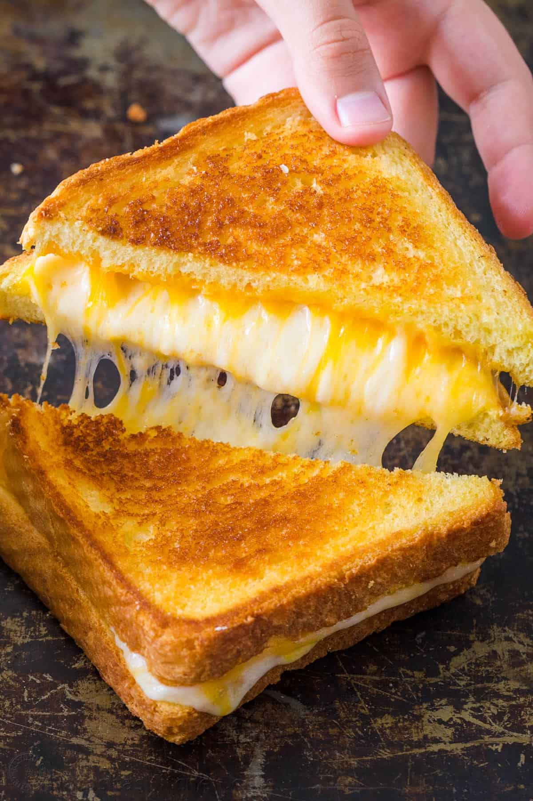

Grilled Cheese

Description
There’s Grilled Cheese and there’s GREAT Grilled Cheese. Learn how to make the best Grilled Cheese Sandwich with a crisp, buttery exterior and gooey cheese center.
Ingredients
- 2 Slices of Bread
- 4 Slices of Cheese of Choice
- Butter
Steps
- Butter one side of each piece of bread and place cheese in between the two slices
- Put a small amount of butter in frying pan and heat pan over medium heat until butter is melted
- Place sandwich into pan and cook into golden brown on one side
- Flip and cook other side until golden brown, as well - Serve!